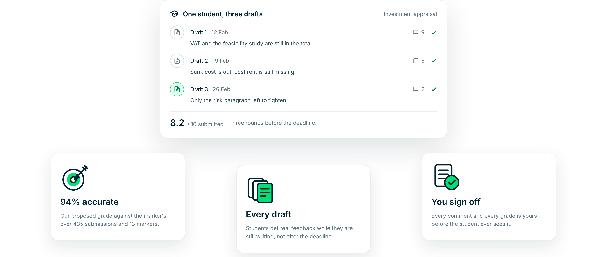

Grade essay 140 like you graded essay one
Eduface drafts the feedback and the grade against your own criteria.
Used by teaching teams at



Eduface drafts the feedback and the grade against your own criteria.

Students compare. And when the marks do not line up, it is the marker they start to doubt, not the work.
Nobody is doing anything wrong. They read the same rubric on a different day, with a different pile behind them.
Business School Nederland and Breederode, 2026. The same pattern came back from Sunderland and Bristol.Twenty markers on one cohort, a thousand assignments a year, and an hour of calibration between them.
CMI Ireland and Bristol University, 2026.By essay 140 there is less time per paper than there was at essay 1, and depth is the first thing to go.
Bath Spa and De Haagse Hogeschool, 2026.Tested on real student work your markers had already graded. Not on a demo set.